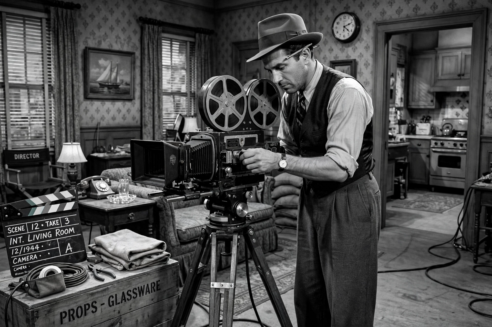

| Gregg Toland | |
| Born | May 29, 1904, Charleston, Illinois, U.S. |
|---|---|
| Died | September 28, 1948 (aged 44), Los Angeles, California, U.S. |
| Occupation | Cinematographer |
| Years active | 1926–1948 |
| Awards | Academy Award for Best Cinematography (Wuthering Heights, 1939) |

Gregg Wesley Toland, A.S.C. (May 29, 1904 – September 28, 1948) was an American cinematographer renowned for his innovative use of deep focus photography, most famously on Orson Welles's Citizen Kane (1941). He is widely considered one of the most influential cinematographers in the history of film.
Toland entered the industry at fifteen as an office boy at the William Fox studio and rose through the camera department, becoming a full director of photography in the late 1920s. Signed by Samuel Goldwyn, he photographed many of the producer's most prestigious pictures of the 1930s, including Les Misérables (1935), Dead End (1937), and William Wyler's Wuthering Heights (1939), for which he won the Academy Award for Best Cinematography.
Toland had been experimenting with deep focus — keeping foreground, middle ground, and background simultaneously sharp — on John Ford's The Long Voyage Home (1940) and The Grapes of Wrath (1940). Loaned to RKO for Welles's Citizen Kane, he achieved the technique with fast film stocks, coated lenses, powerful arc lighting, and small apertures, allowing complex compositions-in-depth that let scenes play in a single unbroken shot. Toland unusually shared a title card with Welles in the film's credits — a mark of the director's gratitude.
During the Second World War Toland served in the Navy photographic unit and co-directed the documentary December 7th (1943). After the war he photographed Wyler's The Best Years of Our Lives (1946), again using deep focus. Toland died of a heart attack in 1948, aged only 44.